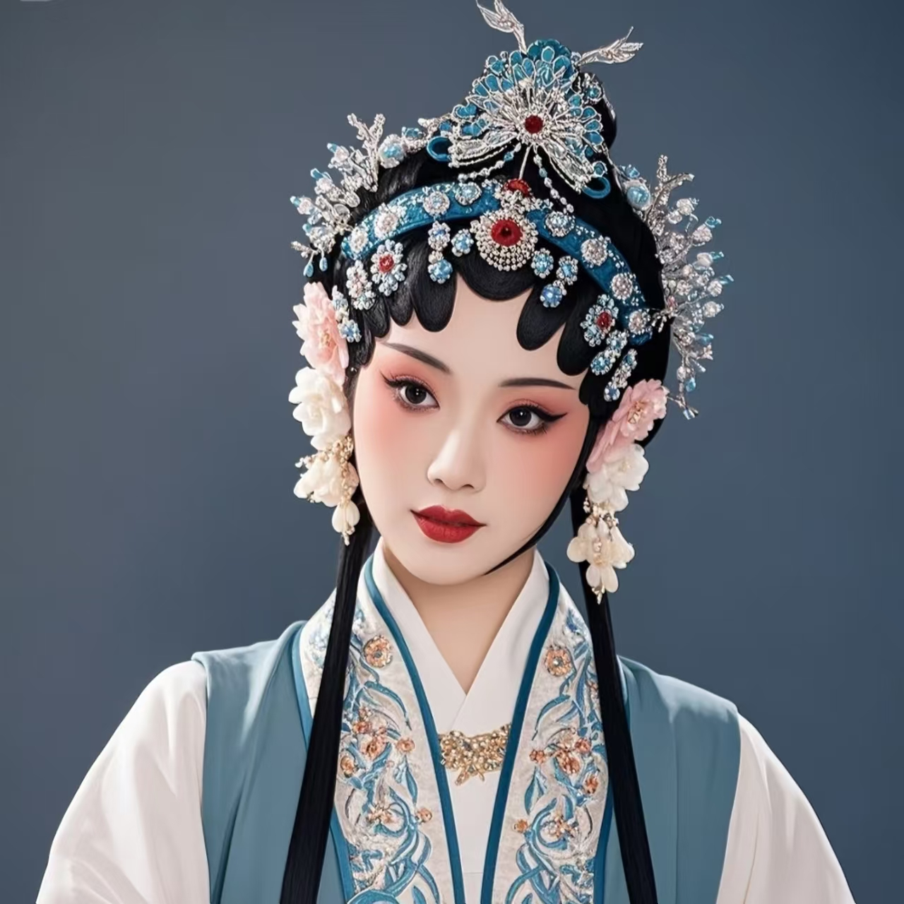

豫剧
中国五大戏曲剧种之一 · 河南 · 国家级非物质文化遗产

一、技艺简介
豫剧，又称"河南梆子"，是中国五大戏曲剧种之一，以河南为中心，流行于中原地区及周边省份。豫剧唱腔铿锵大气、抑扬有度、行腔酣畅、吐字清晰，善于表达人物的内心情感，具有浓郁的中原文化特色。
豫剧是中国最大的地方剧种之一，从业人数和观众群体庞大，被誉为"中原文化名片"。
二、历史渊源
豫剧起源于明代中后期，由河南民间戏曲和山陕梆子融合发展而成。清代乾隆年间豫剧已初具规模，形成了以开封为中心的活动区域。民国时期豫剧进入快速发展阶段，涌现出常香玉、陈素真等一批艺术大师。
2006年，豫剧被列入国家级非物质文化遗产名录。
三、主要流派
- 常派：常香玉创立，唱腔刚健清新，代表剧目《花木兰》
- 陈派：陈素真创立，唱腔优美婉转，代表剧目《宇宙锋》
- 崔派：崔兰田创立，唱腔苍凉深沉，代表剧目《秦香莲》
- 马派：马金凤创立，唱腔明快活泼，代表剧目《穆桂英挂帅》
四、表演形式
- 唱：豫剧唱腔为核心，铿锵大气、抑扬有度
- 念：念白采用河南方言，生动自然
- 做：表演质朴豪放，生活气息浓厚
- 打：武打动作干净利落，富有中原特色
五、文化意义
- 历史传承：承载中原地区的历史记忆和文化传统
- 情感表达：表达中原人民的喜怒哀乐和家国情怀
- 文化认同：增强河南及中原地区的文化认同和凝聚力
- 艺术价值：代表中国梆子声腔的最高艺术成就
"豫剧之美，在于唱腔的铿锵大气与表演的质朴豪放。一声梆子响，唱出了中原儿女的豪迈与深情；一曲河南腔，唱响了黄河文化的厚重与辉煌。"